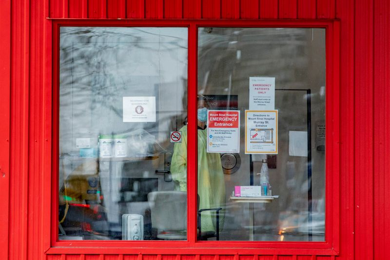

Ontario hospitals may have to withhold care as COVID-19 fills ICUs
By Allison Martell and Anna Mehler Paperny
TORONTO (Reuters) – Doctors in the Canadian province of Ontario may soon have to decide who can and cannot receive treatment in intensive care as the number of coronavirus infections sets records and patients are packed into hospitals still stretched from a December wave.
Canada’s most populous province is canceling elective surgeries, admitting adults to a major children’s hospital and preparing field hospitals after the number of COVID-19 patients in ICUs jumped 31% to 612 in the week leading up to Sunday, according to data from the Ontario Hospital Association.
The sharp increase in Ontario hospital admissions is also straining supplies of tocilizumab, a drug often given to people seriously ill with COVID-19.
Hospital care is publicly funded in Canada, generally free at the point of care for residents.But new hospital beds have not kept pace with population growth, and shortages of staff and space often emerge during bad flu seasons.
Ontario’s hospitals fared relatively well during the first wave of the pandemic last year, in part because the province quickly canceled elective surgeries.
The College of Physicians and Surgeons of Ontario told doctors last Thursday that the province was considering 'enacting the critical care triage protocol,' something that was not done during earlier waves of the virus.Triage protocols help doctors decide who to treat in a crisis.
'Everybody’s under extreme stress,' said Eddy Fan, an ICU doctor at Toronto’s University Health Network.He said no doctor wants to contemplate a triage protocol but there are only so many staff.
'There’s going to be a breaking point, a point at which we can’t fill those gaps any longer.'
In a statement, the health ministry said Ontario has not activated the protocol.A September draft suggested doctors could withhold life-sustaining care from patients with a less than 20% chance of surviving 12 months.A final version has not been made public.
Ontario’s Science Advisory Table had been forecasting the surge for months, said member and critical care physician Laveena Munshi.During a recent shift she wanted to call the son of a patient only to discover he was in an ICU across the street.
'The horror stories that we’re seeing in the hospital are like ones out of apocalyptic movies,' she said.'They’re not supposed to be the reality we’re seeing one year into a pandemic.'
Posted On: 2021-04-12T00:00:00

Content Date: 2021-04-12
Download Date: 2021-04-17
Document ID: L0C04A5V4